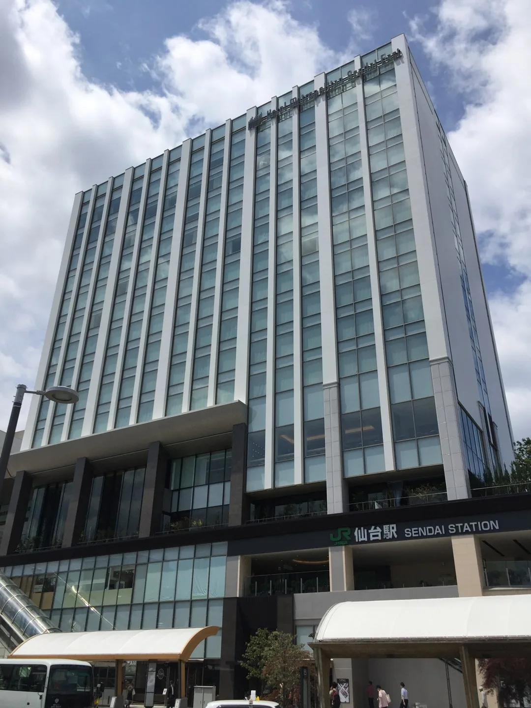
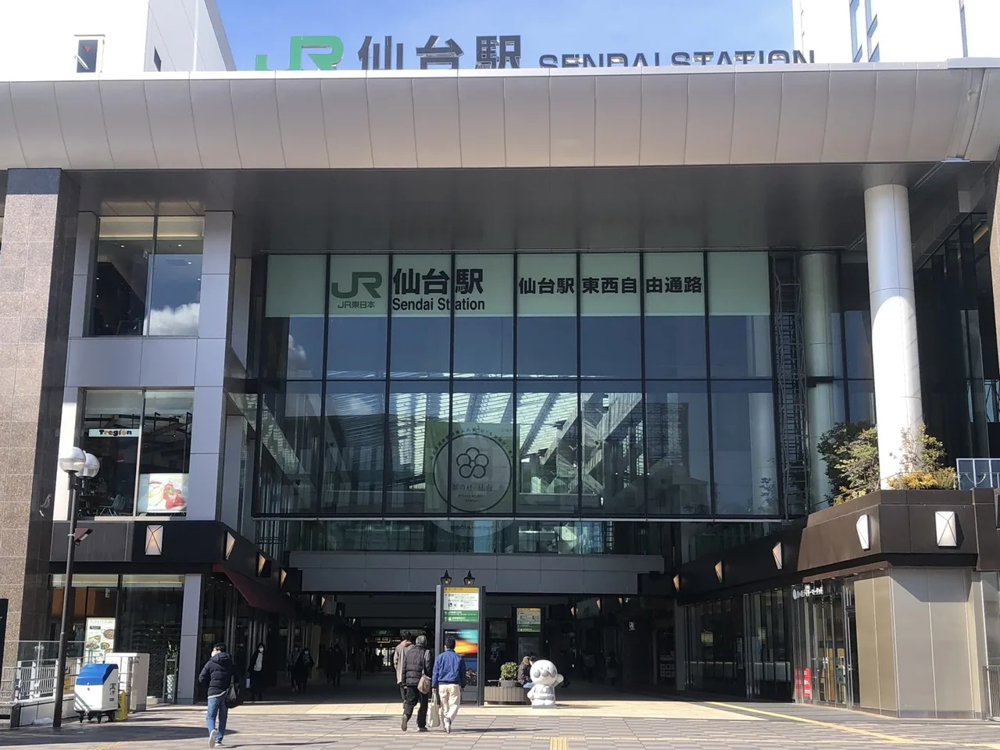

ホテルメトロポリタン仙台イーストはJR仙台駅東口直結です。新幹線からのアクセスは南口改札を目印にし、エスパル仙台 東館を経由してホテルの3階入口へ向かいます。朝の列車に合わせて宿を選びたい人や、仙台到着後に荷物を置いて出かけたい人に向く立地です。案内は2026年11月22日時点です。
01仙台駅からのアクセスは改札と入口の階を確認
新幹線で着いたら、南口改札から「杜のダイニング」を経由します。南口改札を出て右へ進み、エスパル仙台 東館の「杜のダイニング」に入って直進します。突き当たりの3階入口から入り、フロントは4階です。予約確認メールを地図代わりに使うなら、ホテル名の末尾の「イースト」と、改札・入口の階を一緒に控えておくと、同行者にも道順を伝えやすくなります。


仙台空港からは、仙台空港アクセス線で仙台駅へ向かいます。ホテルのFAQでは、駅に着いたら2階東口改札から東西自由通路を経由し、ホテルの2階入口に入るよう案内しています。新幹線の同行者と在来線の同行者が別々に着く場合は、どちらの入口で待ち合わせるかを決めておくと、入口の階が分かれても合流しやすくなります。

東西自由通路の写真の原版と利用条件。入口の位置はホテル公式のアクセス案内で確認できます。

02チェックイン前とチェックアウト後の荷物預かり
チェックインは15時から、チェックアウトは11時です。チェックアウトの時刻はプランによって異なるので、観光の予定を立てるときは予約画面の時刻を優先してください。チェックイン前とチェックアウト後の荷物は、4階のベルキャプテンデスクで預けられます。
注意荷物を預けられるのは、チェックイン日とチェックアウト日の当日です。
列車の発車時刻から、荷物の受け取りに戻る時刻を逆算しておきましょう。例えば、到着日はホテルへ寄ってから昼食に向かい、帰る日はチェックアウト後に用事を済ませ、荷物を受け取ってから新幹線に乗る流れです。大きな荷物と一緒に移動する時間を短くしたいときは、駅への近さと荷物預かりをセットで見ると予定を組みやすくなります。
03客室は人数とベッドの使い方で選ぶ
公式の客室案内では、シングル・ダブルとツインが分かれています。部屋の広さと、何台のベッドで寝るかを一緒に確認すると、同じ人数でも部屋を選びやすくなります。
| 旅の目的 | 客室の候補 | 予約前に確認すること |
|---|---|---|
| 一人旅や出張 | ワイドシングル | 21㎡。シングルタイプで、公式の定員表記は2名 |
| 二人で別々のベッドを使う | コンパクトツイン | 24㎡、定員2名 |
| 友人や家族と3名で泊まる | スーペリアツイン | 34㎡、定員3名。3名予約時は追加ベッドを使用 |
一人で泊まるなら、ワイドシングルを起点に希望日の料金を見てみましょう。二人旅で睡眠時間がずれそうなら、ベッドを分けられるツインが候補になります。三人旅で部屋を一緒にするか迷う場合は、同じ日付・人数で、スーペリアツインと部屋を分けた場合の合計額を比べると判断しやすくなります。追加ベッドを使う部屋では、誰が使うかや荷物をどう置くかも予約前に相談しておくと安心です。
04よくある質問
アクセスは新幹線のどの改札が目印ですか？
仙台駅の新幹線南口改札です。エスパル仙台 東館の「杜のダイニング」を経由し、3階メインエントランスに向かいます。
チェックイン前に荷物を預けられますか？
チェックイン当日は、4階のベルキャプテンデスクで預けられます。チェックアウト当日も預かりの対象です。
チェックアウトは何時ですか？
通常は11時です。プランによって異なるので、予約したプランの案内を確認してください。
05まとめ
新幹線なら南口改札、仙台空港アクセス線なら2階東口改札を目印にしてください。荷物を預けて観光する日は、戻って受け取る時間も旅程に入れましょう。客室は、同行者の人数とベッドの使い方を先に決めておくと比べやすくなります。宿泊先や訪れた場所を後から振り返りたい人には、旅先を地図に残すTabi Noteの使い方も参考になります。